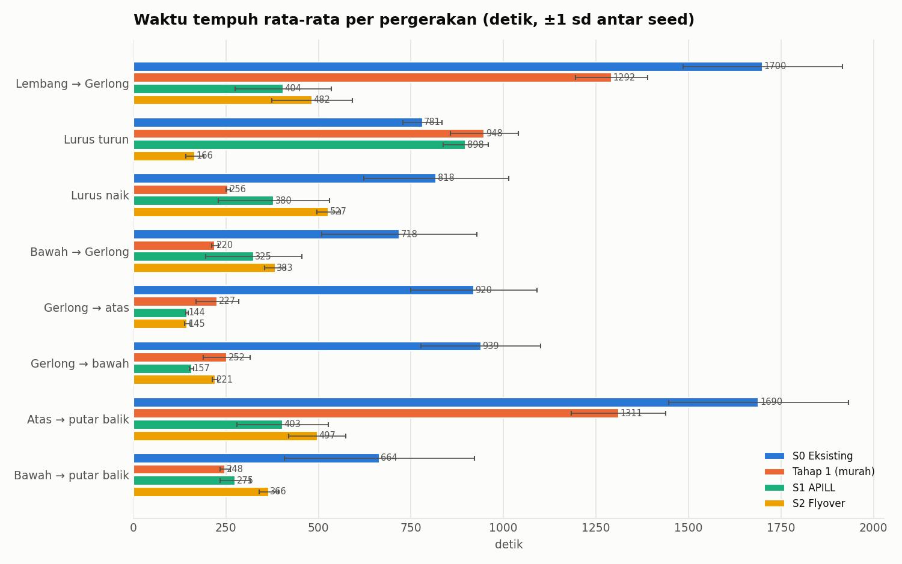
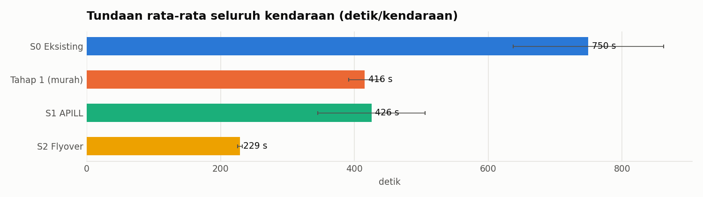
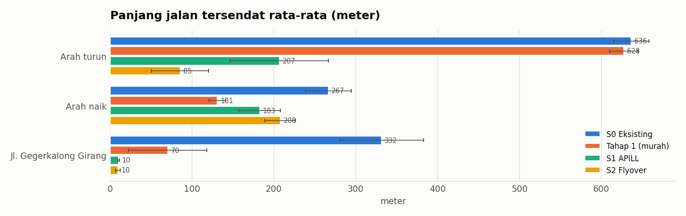
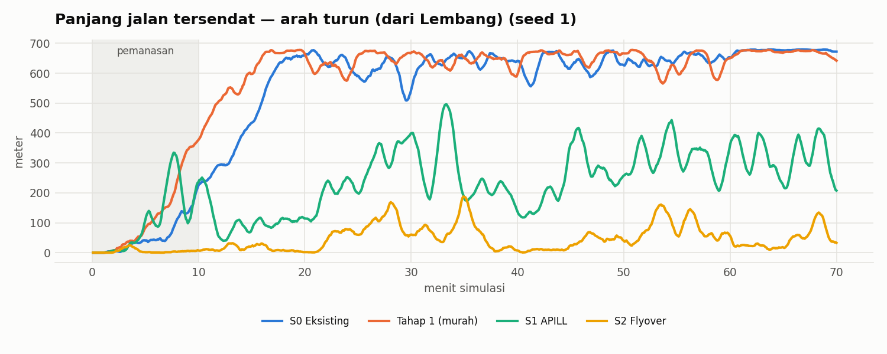
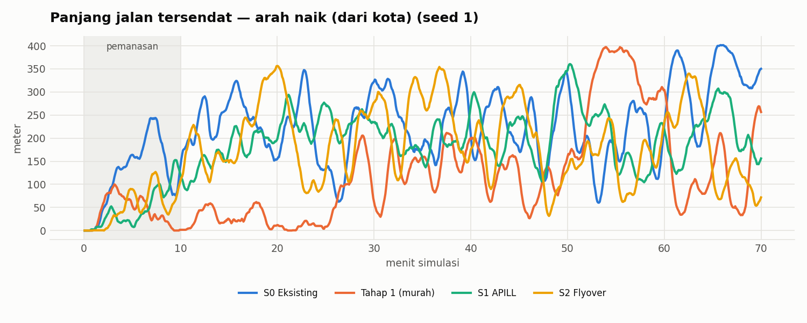

Hasil Simulasi — Puteran Jl. Dr. Setiabudi × Gerlong
SUMO 1.28 · 60 menit jam puncak setelah pemanasan 10 menit · rata-rata ± simpangan baku antar seed acak ·
volume = asumsi jam puncak (PKJI 2023). ← kembali ke simulasi 3D
Pergerakan utama: dari Lembang ke Gerlong
Indikator utama
Waktu tempuh per pergerakan (detik) dan perubahan terhadap kondisi sekarang
▼ hijau = lebih cepat dari S0 · ▲ merah = lebih lambat dari S0
Grafik




